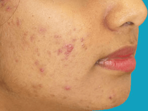

Benzoyl peroxide works as an antiseptic to reduce the number of bacteria on the surface of the skin.
It also helps to reduce the number of whiteheads and blackheads, and has an anti-inflammatory effect.
Benzoyl peroxide is usually available as a cream or gel. It's used either once or twice a day.
It should be applied 20 minutes after washing to all of the parts of your face affected by acne.
It should be used sparingly, as too much can irritate your skin. It also makes your face more sensitive
to sunlight, so avoid too much sun and ultraviolet (UV) light, or wear sun cream.
Benzoyl peroxide can have a bleaching effect, so avoid getting it on your hair or clothes.
Common side effects of benzoyl peroxide include:
Topical retinoids work by removing dead skin cells from the surface of the skin (exfoliating)
which helps to prevent them building up within hair follicles.
Tretinoin and adapalene are topical retinoids used to treat acne. They're available in a gel
or cream and are usually applied once a day before you go to bed.
Apply to all the parts of your face affected by acne 20 minutes after washing your face.
It's important to apply topical retinoids sparingly and avoid excessive exposure to sunlight and UV.
Topical retinoids aren't suitable for use during pregnancy, as there's a risk they might cause birth defects.
The most common side effects of topical retinoids are mild irritation and stinging of the skin.
A six-week course is usually required, but you may be advised to continue using the medication less frequently after this.
Topical antibiotics help kill the bacteria on the skin that can infect plugged hair follicles.
They're available as a lotion or gel that is applied once or twice a day.
A six- to eight-week course is usually recommended. After this, treatment is usually stopped,
as there's a risk that the bacteria on your face could become resistant to the antibiotics.
This could make your acne worse and cause additional infections.
Side effects are uncommon, but can include:
Azelaic acid is often used as an alternative treatment for acne if the side effects of benzoyl
peroxide or topical retinoids are particularly irritating or painful.
Azelaic acid works by getting rid of dead skin and killing bacteria. It's available as a cream
or gel and is usually applied twice a day (or once a day if your skin is particularly sensitive).
The medication doesn't make your skin sensitive to sunlight, so you don't have to avoid exposure
to the sun.
You'll usually need to use azelaic acid for a month before your acne improves.
The side effects of azelaic acid are usually mild and include:
Antibiotic tablets (oral antibiotics) are usually used in combination with a topical treatment to treat more
severe acne.
In most cases, a class of antibiotics called tetracyclines is prescribed, unless you're pregnant or breastfeeding.
Pregnant or breastfeeding women are usually advised to take an antibiotic called erythromycin, which is known to
be safer to use.
It usually takes about six weeks before you notice an improvement in your acne.
Depending on how well you react to the treatment, a course of oral antibiotics can last four to six months.
Tetracyclines can make your skin sensitive to sunlight and UV light, and can also make the oral contraceptive pill
less effective during the first few weeks of treatment.
You'll need to use an alternative method of contraception, such as condoms, during this time.
Hormonal therapies can often benefit women with acne, especially if the acne flares up around periods or is
associated with hormonal conditions such as polycystic ovary syndrome.
If you don't already use it, your GP may recommend the combined oral contraceptive pill, even if you're not sexually active.
This combined pill can often help improve acne in women, but may take up to a year before the full benefits are seen.
Co-cyprindiol is a hormonal treatment that can be used for more severe acne that doesn't respond to antibiotics.
It helps to reduce the production of sebum.
You'll probably have to use co-cyprindiol for two to six months before you notice a significant improvement in your acne.
There's a small risk that women taking co-cyprindiol may develop breast cancer in later life.
For example, out of a group of 10,000 women who haven't taken co-cyprindiol, you would expect 16 of them to develop breast
cancer by the time they were 35. This figure rises to 17 or 18 for women who were treated with co-cyprindiol for at
least five years in their early twenties.
There's also a very small chance of co-cyprindiol causing a blood clot. The risk is estimated to be around 1 in
2,500 in any given year.
It's not thought to be safe to take co-cyprindiol if you're pregnant or breastfeeding. Women may need to have a
pregnancy test before treatment can begin.
Other side effects of co-cyprindiol include:
Isotretinoin has a number of beneficial effects: